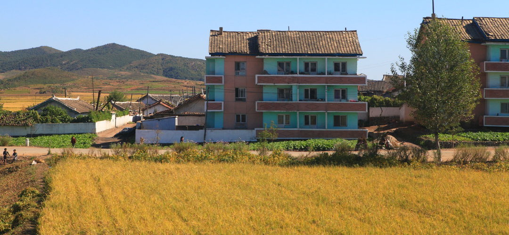
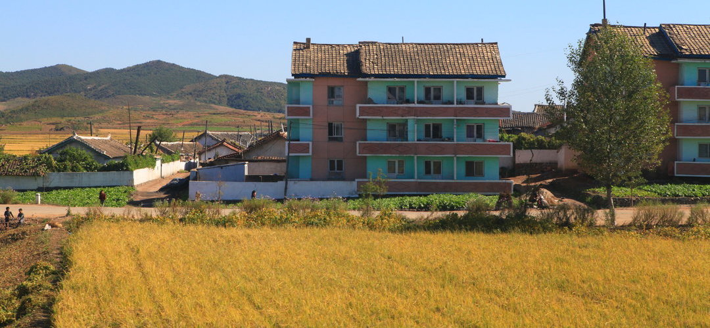

穿越中...
穿越中...
 千亿级像素全景图，鼠标旋转缩放
朝鲜-新义州市
千亿级像素全景图，鼠标旋转缩放
朝鲜-新义州市
 

Welcome to Sinuiju City, North Korea
朝鲜民主主义人民共和国，简称朝鲜，有时会称为北韩，位于朝鲜半岛北部，以金日成创建的主体思想为指导，实行计划经济和先军政治，拥有世界第四大规模的军队和核武器。目前旅行者只能跟团进入朝鲜，途中需要遵守各种限制。
新义州是朝鲜西北部边境城市，平安北道首府，与与我国辽宁省丹东市有长达944米的大铁桥相连，国内游客可以在丹东火车站办理出境手续，乘坐丹东-新义州的国际列车出境，通过中朝友谊大桥，便能抵达朝鲜第五大城市新义州火车站，在这里办理入境手续。然后继续搭乘朝鲜国内火车前往平壤（约6个小时）。新义州是朝鲜华侨主要居住的城市之一
朝鲜民主主义人民共和国位于亚洲的东部，朝鲜半岛的北部，是一个社会主义国家，总面积约为120540平方公里，简称“朝鲜”。“朝鲜”一名大概是檀君朝鲜首都阿斯达的古朝鲜语的一种译文。朝鲜和韩国在历史上曾经是一个国家，根据《东国舆地胜览》中的记载：“国在东方，先受朝日之光鲜”，故当时命名为朝鲜。
虽然朝鲜语言的一部分出自于阿尔泰语系，但其语音主要是由中国自商周时期至清朝时期的多时间段及多层次的中国北方汉民族口音，以及中国北方的少数民族口音与一些中国南方沿海地带的居民口音所融合形成。公元1392年，原属于中国元朝辽阳行省双城总管府的李成桂，成功推翻了高丽王朝并自立为王，开创了朝鲜王朝。二战后的1948年9月9日，朝鲜民主主义人民共和国成立，并由朝鲜劳动党执政。
走进朝鲜新义州，你不会觉得这是一个现代化的大城市。这里的车道最宽是四车道，水泥路居多，几乎见不到泊油路。市中心的道路相对好一些，街上红绿灯也很少。街上的交警主要是男性，当地人开玩笑说，漂亮的女交警都去平壤工作了。新义州街头的车辆很少，但街道非常干净。当地百姓出行主要骑自行车， 朝鲜人主要都是以公共交通工具出行为主，或者是自己骑单车。在朝鲜，并不鼓励购买私家车，能够拥有私家车的，都不是一般人。往往是对国家有着重大贡献的，才可以享受购买私家车。
新义州百姓做饭，很少用液化气，主要用蜂窝煤做饭。新义州有个民俗公园，游客到新义州旅行，都会参观民俗公园，在这里可以打靶，可以荡秋千，可以打靶射击，还可以品尝朝鲜的烧烤。
朝鲜是一个生活压力非常小的国家，在朝鲜基本上是不存在房贷。因为朝鲜所实行的是免费住房政策。
朝鲜文化是一个古老的文化。朝鲜民族传统文化有着其独特的文化特征。主要包括盘索里、朝鲜农乐和散调等。它的传统舞蹈源于萨满教的祭祀活动，分为宫廷舞蹈和民间舞蹈两种。它的传统建筑讲究对地形的选择，阴阳协调，一般依山朝南而建。早在新石器时期，朝鲜民族就开始使用陶器。三国时期陶瓷技艺在朝鲜半岛得到了进一步的发展完善
红色是目前朝鲜文化的一面旗帜，过去的朝鲜和中国一样，同样是受儒家文化影响的区域。